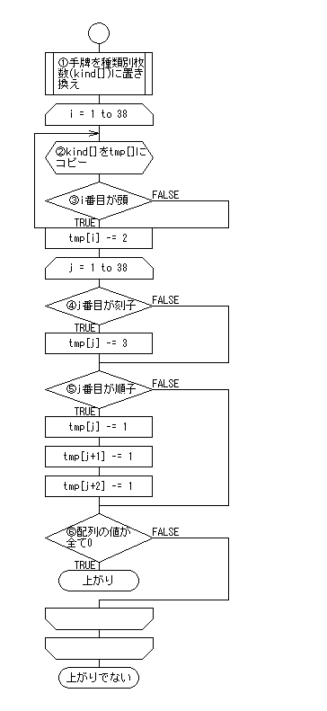

麻雀の作り方（あがり判定）
文章：.1064
日付：2004/07/11
目次
1.はじめに
2.麻雀の仕様
3.データ構造
−牌のデータ構造
−手牌のデータ構造
4.あがり役判定
−手牌を種類別の数(kind[])に置き換える
−牌の取り出し
−kind[]をtmp[]にコピー
−頭の判定
−刻子の判定
−順子の判定
−配列の値が全て0
1.はじめに
今回は麻雀の作り方を説明します。
麻雀は運の要素が強いので、初心者でもベテランの人に勝ててしまうことがある
エキサイティングなゲームです。
最近は、東風荘やMJ、麻雀格闘倶楽部などネットワーク対戦が流行っていますね。
一般的な麻雀は４人でプレイしますが、
いきなりそれを作るのは大変です。
とりあえずは、１人で遊べるようなものを作ることを目標とします。
まず、「あがり判定」をつくり、それから「役の判定」を作ります。
それができたら、２人→４人とプレイ人数を増やしていきます。
今回の内容はここを参考にしています。
麻雀の役判定アルゴリズムについてのドキュメント
（というかここを読めば、今回の内容を読む必要ないような…（´ー｀;））
2.麻雀の仕様
まず、麻雀とはどんなゲームであるかを説明します。
麻雀とは、
山から牌というものを取り、
その牌を組み合わせて、役を作るゲームです。
次に牌の種類です。
牌には、
1〜9の数字牌とそれ以外の字牌があります。
数字牌には、
マンズ／ピンズ／ソーズの３種類あります。
字牌には、白発中東南西北の７種類あります。
があります。
手牌としてプレイヤーに配られるのは14枚です。
これを１つ捨てて、１つ山から取ることで役を作ります。
組み合わせ方の基本となるのは、以下の３つとなります。
- 刻子：同じ牌を３つ揃えたもの
- 順子：数字牌を連番で３つ揃えたもの
- 頭：同じ牌を２つ揃えたもの
刻子または順子をあわせて４つ揃え、頭を１つ揃えれば上がりです。
（3×4＋2=14ですね）
例えば、
111 222 345 678 99
と揃えれば上がりです。
他にも、リーチやら鳴き、ロンなどのルールがありますが、
今回は上がり判定の説明に留めておきます。
詳しくはGoogleで「麻雀 ルール」で検索してください（´∀｀;）
3.データ構造
−牌のデータ構造
まず牌のデータ構造を考えてみます。
定数を以下のように割り当てます。
- 1〜9：マンズ
- 11〜19：ピンズ
- 21〜29：ソーズ
- 31〜38：白発中東南西北
こうしておけば、ソートをするとき楽ですし、数字と牌の対応が簡単でしょう。
−手牌のデータ構造
次に手牌です。
単純に14枚ですから、14要素の配列でいいでしょう…。（´ε｀;）
4.あがり役判定
ここでは、あがり判定を行う関数を作成します。
入力は手牌となり、出力としてあがっているか否か（真偽）を返します。

ちょっと長めのフローですが、
キモとなるのは、最初の置き換え処理と２重ループの部分ですから、
そこを抑えれば、そんなに難しくないと思います。
−手牌を種類別の数(kind[])に置き換える
ここは何をしているのかというと、例えば、手牌が「22334455556788」である場合、
kind[1] = 0
kind[2] = 2
kind[3] = 2
kind[4] = 2
kind[5] = 4
kind[6] = 1
kind[7] = 1
kind[8] = 2
kind[9] = 0
というように、それぞれの牌が何枚づつあるか、という視点に置き換えているだけです。
こうすることで、これ以降の処理がとても楽になります。
また、kind[]は牌のデータ構造と対応していると、処理が楽です。
kind[1〜9]：マンズ、kind[11〜19]：ピンズ、…というように。
−牌の取り出し
あがり判定の考え方としては、14枚ある手牌を、頭／刻子／順子の規則で取り出していき、
すべて取り出せた場合にあがりとなります。
ここで注意することとして、例えば12223という並びがあった場合、
順子で123と取り出して、頭で22と取り出せばいいのですが、
刻子で222と取り出してしまうと、13が残り正しく判定ができなくなってしまいます。
ですので、正しい優先順位をつけて取り出さないと、ダメなわけです。
色々方法はありますが、ここでは頭＞刻子＞順子の順番で取り出しを行います。
なぜこの順番で取り出すのかというと、
頭＞刻子でないと、先ほどの12223のパターンで失敗してしまうからです。
また刻子＞順子としているのは、111222333のパターンで、
123 123 123というように、三暗刻のパターンを逃してしまうからです。
（今回の上がり判定を考えるだけなら、どちらでもいいわけですが…）
以上の考え方があるため、
第一のループで頭の候補を探し、
第二のループで刻子／順子の取り出しを行っているわけです。
−kind[]をtmp[]にコピー
「種類別の数」に編集をかけるので、テンポラリにコピーします。
−頭の判定
tmp[i]が2以上であれば、頭の候補となりますので、tmp[i]をマイナス2します。
2より小さい場合は、次のループに進みます。
−刻子の判定
tmp[j]が3以上であれば、刻子となりますので、tmp[j]をマイナス3します。
−順子の判定
tmp[j]が1以上かつtmp[j+1]が1以上かつtmp[j+2]が1以上であれば、順子となりますので、
tmp[j]とtmp[j+1]とtmp[j+2]をマイナス1します。
−tmp[]の値が全て0
全てが取り出されていれば、全て「0」となりますので、その判定を行っています。
全て「0」であれば、上がりとなります。
とりあえず、これであがり判定は行えます。
あとは、手牌が13枚であるときの聴牌判定や、当たり牌の探索などがあります。
アプローチとしては、この牌を入れたら上がりとなるか？
という処理にしてしまうと楽です。
つまり、手牌の中に仮に加えてしまい、今回の当たり判定ロジックを通す、ということです。
以上、.1064でした。